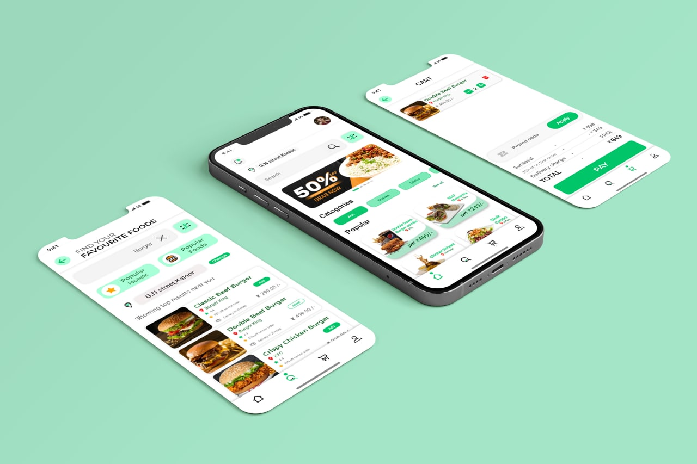
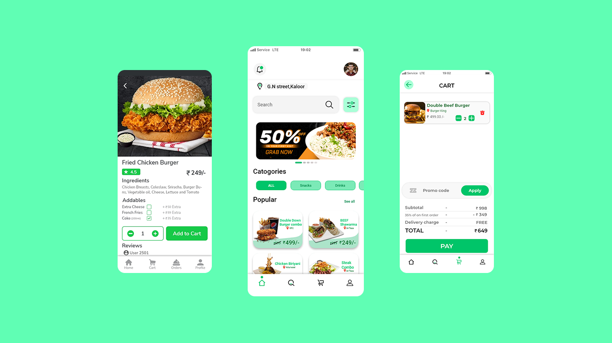

Product design
Food Delivery App
A clear and minimalistic UI for Food Delivery App
- Food Delivery
- Minimalistic
- UI Design


1 / 1
Selected interface work
designed in Figma.
I approach interface design the same way I approach backend systems: understand the rules, remove ambiguity, and make every state intentional.
FIGMA / UI · UX / PROTOTYPING01 / Selected work
02 / Process
Clarify the user, problem, constraints, and information the interface must support.
Map flows and hierarchy before spending time on visual detail.
Build reusable components, deliberate states, and responsive layouts in Figma.
Prototype important paths, collect feedback, and refine what causes friction.
Have a product or interface in mind?